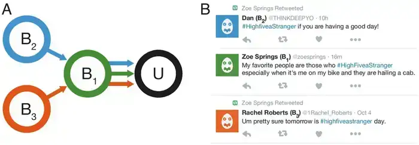

The claim
Recommendation systems optimise for engagement. The claim is that engagement is best served by content that escalates — more extreme, more emotional — and that the result is a pipeline from ordinary interest to radical content.
Maps, diagrams and images




The evidence
The evidence is mixed and methodologically hard. Platform-internal studies have reported small or no average effects of algorithmic ranking on extreme content; independent audits have found that recommendation systems do surface extreme material for some users; and survey work finds associations that cannot establish causation.
The central problem is the counterfactual. To know whether the algorithm radicalised someone, you need to know what they would have encountered without it, and no external researcher has that data. The platforms do, and have not released it in a form that permits independent analysis.
Documented: recommendation systems optimise for engagement, and engagement rewards emotional content.
Documented: some audits find extreme material surfaced to some users.
Contested: the average effect size, and whether ranking is the main cause.
Not available: the data that would settle the counterfactual.
The honest label: live debate — a plausible mechanism with contested evidence, in a field where the evidence is held privately.
Why it is in the archive
Because it is the claim where the archive's method runs into its hardest case: the evidence is not missing because nobody looked, but because the people who have it are the people being studied.
Open resources on this topic
- PapersOpen-access articles: DOAJ · PubMed Central · Internet Archive Scholar
- BooksPublic-domain and borrowable copies: Open Library · Project Gutenberg · Google Books · Internet Archive
Cite this page
Momin, S. (2026). Algorithmic Radicalisation. The Larger World Archive. https://drsamonline.github.io/LARGE_GLOBE/algorithmic-radicalisation.htmlMomin, Sohil. “Algorithmic Radicalisation.” The Larger World Archive, 2026, https://drsamonline.github.io/LARGE_GLOBE/algorithmic-radicalisation.html.Momin, Sohil. “Algorithmic Radicalisation.” The Larger World Archive, 2026. https://drsamonline.github.io/LARGE_GLOBE/algorithmic-radicalisation.html.@misc{algorithmic2026algorithmic,
author = {Momin, Sohil},
title = {Algorithmic Radicalisation},
year = {2026},
howpublished = {The Larger World Archive},
url = {https://drsamonline.github.io/LARGE_GLOBE/algorithmic-radicalisation.html},
note = {Last reviewed 20 November 2026}
}Last reviewed 20 November 2026 · Corrections policy · this page is not peer reviewed
Sources for this page
- Wikipedia, “Recommender system” — the technologyen.wikipedia.org
- Wikipedia, “Filter bubble” — the related claimen.wikipedia.org
- Wikipedia, “Echo chamber (media)” — the older concepten.wikipedia.org
- Wikipedia, “Algorithmic curation” — the practiceen.wikipedia.org